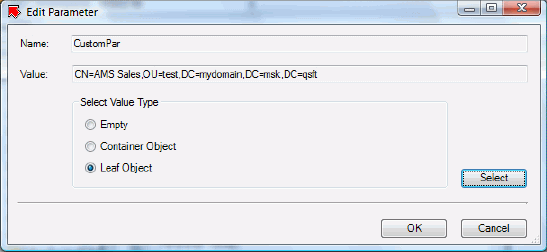

This topic provides a sample Microsoft .NET project that illustrates how to create a DLL assembly used to customize the Edit Parameter dialog box. All files related to this project are saved in the folder '...\SDK\Samples\ARServer Snap-in\CustomPicker'.
This topic also provides a sample policy script that declares a custom-type parameter to specify with the customized Edit Parameter dialog box.
To use this sample
-
Using Microsoft Visual Studio 2008, build the sample project.
-
Add the sample policy script (see Declaring Parameters in Policy Script) to a Policy Object.
-
Using the Active Roles console, specify the policy script parameters.
This topic details the steps of the above procedure.
Building the Sample .NET Project
To build the sample project
-
Start Microsoft Visual Studio 2008, and open the delivered file CustomPicker.sln.
-
On the Project menu, click Add Reference.
The Add Reference dialog box opens. -
Using the Add Reference dialog box, add the Interop.ArsAppCntxtMenuCommand.dll and Interop.ArsSnapComponents.dll files.
These files are available in the folder < Active Roles Installation folder>/MMC/. -
On the Build menu, click Rebuild Solution.
The CustomPicker.dll file will be created. The path to this file depends on your Visual Studio settings.
Important
Create the '< Active Roles Installation folder>/MMC/Extensions' folder, and save the newly created DLL assembly CustomPicker.dll to this folder.
Declaring Parameters in Policy Script
This sample policy script module uses the CustomPicker.dll file created with the sample .NET project. The script allows you to create a script policy with the following declared parameters:
|
Parameter Name |
Parameter Type |
Possible Values |
|
OCS Server |
String |
srv1, srv2, srv3 |
|
CustomPar |
Custom Type |
Any appropriate value. |
|
User's manager |
DN string |
Any appropriate value. |
[PowerShell]
function onInit($context)
{
$var = $context.AddParameter("OCS Server")
$var.DefaultValue = "First Server in Organization"
$var.Description = "Multivalued parameter."
$var.PossibleValues = "First Server in Organization",
"srv1", "srv2", "srv3"
$var.MultiValued = $true
$var.Required = $true
$var1 = $context.AddParameter("CustomPar")
$var1.Description = "A custom parameter"
$var1.DefaultValue = ""
$var1.Required =$true
$var1.CustomPicker = "CustomPicker.CustomPickerObj:CustomPicker.dll"
$var1.CustomPickerInitInfo = "Custom Parameter"
$var2 = $context.AddParameter("User's manager")
$var2.DefaultValue = ""
$var2.Description = "Specifies the user manager."
$var2.Syntax = "DN"
}
#
# The policy script code goes here
#
#
Applying Policy Script
To apply the policy script module
-
Register the policy script module above on the Administration Service.
-
Create a Provisioning Policy Object.
-
Add the script module to the Policy Object.
-
Link the Policy Object to a container, such as a directory folder or Managed Unit, where you want to enforce the administrative policy.
For detailed information about how to apply policy scripts, refer to Applying Policy Scripts.
Specifying Policy Script Parameters
After you create a Policy Object that includes this sample script module, you can specify the policy script parameters.
The following procedure details steps to modify the value of the custom-type parameter CustomPar. In this scenario, the parameter can take any of the following values:
-
An empty string (not set)
-
Distinguished name of a selected container object (such as domain, Organizational Unit, etc.)
-
Distinguished name of a leaf directory object (such as user, group, etc.)
To specify the CustomPar parameter
-
In the console tree, under the Active Roles snap-in item, expand the Configuration node.
-
Under Configuration, click Policies, and in the details pane, double-click Administration.
-
In the details pane, double-click the Policy Object that includes the sample policy script.
The Policy Object Properties dialog box opens. -
In the Properties dialog box, click the Policies tab, select the policy entry associated with the sample script, and then click View/Edit.
The Script Execution Policy Properties dialog box opens. -
In the Script Execution Policy Properties dialog box, open the Parameters tab.
This tab displays the names and values of all parameters declared in the sample script. -
On the Parameters tab, under Parameter values, select CustomPar, and then click Edit.
This opens the Edit Parameter dialog box similar to the following screen: -
Under Select Value Type, select the desired type of the CustomPar parameter, and then click Select or OK (only for the Empty option):
- Empty: Sets the CustomPar parameter to an empty string.
- Container Object: Opens the Select Container dialog box that allows you to select a container object.
- Leaf Object: Opens the Select Object dialog box that allows you to select a leaf directory object.
- When finished, click OK to close the Edit Parameter dialog box.
{kind=link}
